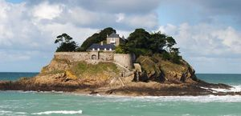
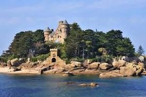
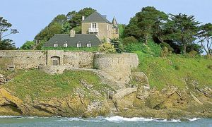

Recensement Jean-Claude Truffet



| Département | 35 — Ille-et-Vilaine |
| Canton | Saint-Malo |
| Commune | Saint-Coulomb |
| Type d'édifice | Château |
| Période d'origine | XI-XIII-XVI |
FORT DUGUESCLIN, la première construction fut bâtie en 1026 par un membre de la famille Du Guesclin, un imposant château fort flanqué de trois tours et d'un donjon, protégé par deux cercles d'enceintes et doté d'une citerne profonde de 33 mètres. En 1207, Jean sans Terre, roi d'Angleterre, fit occuper le fort jusqu'à ce que Juhel III de Mayenne en chassât les Anglais à la suite de sanglants combats. Les du Guesclin, trouvant le site trop exposé, quittèrent le fort vers 1259 et s'établirent non loin de là, dans les terres, au Plessis-Bertrand que venait de faire construire l'arrière-arrière-grand-père de Bertrand Du Guesclin. Le fort, démantelé depuis, fut racheté en 1500 par Guillaume de Châteaubriant et revendu en 1589 à la Maison de Rieux. Finalement, de 1757 à 1759 l'ancienne construction fut rasée et Vauban y fit construire un fort comprenant une caserne avec magasin à poudre et des plateformes à canons pour protéger la côte des Anglais. Ayant perdu son utilité militaire en 1826, le fort fut vendu à des particuliers aux enchères, puis transformé en résidence de villégiature par les habitants civils qui superposèrent deux corps de maison à la garnison formant la bâtisse actuelle. En 1942, pendant l'établissement du Mur de l'Atlantique, les lieux furent occupés par l'armée allemande qui réaménagea les anciennes meurtrières et y installa un canon antiaérien. Après le débarquement de 1944, le fort retourna dans des mains civiles, d'abord en possession du maire de Saint-Servan qui ensuite le vendit en 1959 au chanteur Léo Ferré qui y résida jusqu'en 1968, y composant de nombreuses chansons, notamment La Mémoire et la mer. Laissé à l'abandon à la suite d'un partage de biens difficile, le fort fut racheté en 1996 aux héritiers de Léo Ferré par la famille Porcher, qui restaura la bâtisse et entretient depuis cette résidence exceptionnelle.
DUGUESCLIN, la forteresse est fondée en 1160 par un du Guesclin. Vers 1259, les du Guesclin quittent le site trop exposé pour s'établir au Plessis Bertrand. La forteresse est démantelée dès le moyen-age et rasée de 1757 à 1759 pour la construction d'un fort et ensuite transformé en résidence de villégiature au XIXe siècle. VILLE -BAGUE, la construction du logis peut être attribuée à l'une des plus grandes famille de Saint-Malo aux XVIIe et XVIIIe siècles, les Magon de la Chipaudière, propriétaires à partir de 1695, mais le logis, de type malouinière, semble légèrement postérieur. A l'intérieur le papier peint du grand salon date de 1820 (manufacture Dufour et Leroy) et représente l'arrivée de Pizarre chez les Incas. Il fut posé dans les salons de la Ville Bague à la demande de Hiacynthe de Penfentenio, marquis de Cheffontaines et de son épouse Julie-Marie-Rose Eon à leur retour d'exil. Exemplaire exceptionnel dans sa version intégrale, ce panoramique fut déposé et vendu en 1972 et retrouvé à vendre sur le marché de l'art en 1976. Très endommagé, il a été restauré par les Beaux-Arts à Paris qui, par chance, en possédaient un autre exemplaire intact au musée des arts décoratifs. Le jardin a été aménagé à la fin du XVIIe siècle, et l'on peut lire son tracé sur le relevé des Côtes de France. Du tracé original ne subsistent aujourd'hui que l'enceinte et le tracé des deux premières terrasses, la dernière ne faisant plus partie de la propriété. Un parc paysager a été redessiné au XIXe siècle, flanqué d'un potager et d'une roseraie au niveau de la deuxième terrasse. Le parc a conservé son aspect global du XIXe siècle, des parterres à la française ont été replantés sur la deuxième terrasse après les ravages causés par la tempête. Construite en 1690 par Julien Eon, Sieur de la Ville Bague, et consacrée par l'évêque de Dol en 1695, la chapelle Sainte-Sophie date de l'ancien manoir qui se tenait à la place de l'actuelle malouinière.
Famille de Guillaume de Châteaubriant Fort Duguesclin; chanteur Léo Ferré
"
a Saint-Coulomb, le fort Duguesclin et la ville Baguer gps 48° 40' 30" nord, 1° 54' 42" ouest